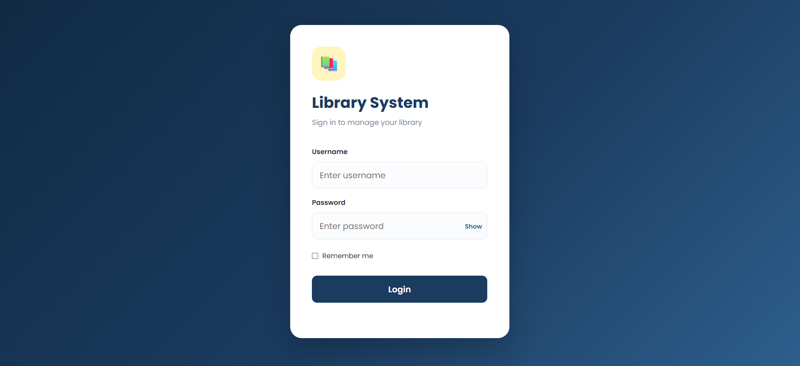
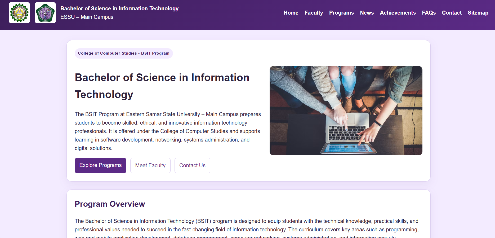

BS Information Technology Student
San Isidro, Sulat, Eastern Samar, Philippines
Web Development
UI Design
Programming
Database Systems
Responsive Design
WELCOME TO MY PORTFOLIO
I am passionate about web development, programming, and UI design. I enjoy creating clean, functional, and user-friendly websites while continuously improving my technical skills through school projects and personal work.
View My ProjectsI am Carl Fredrich B. Dongallo, a 2nd year Bachelor of Science in Information Technology student at Eastern Samar State University. I am interested in web development, programming, and UI design.
I enjoy learning new technologies and improving my skills through school projects. I have experience creating websites using HTML and CSS in Visual Studio Code, and I am continuously working to become a better developer.
🎓 Bachelor of Science in Information Technology
📅 School Year 2026 – 2027 · 2nd Year
⭐ Relevant Coursework:
Programming, Web Development, Database Systems,
Human-Computer Interaction
Taft National High School
Completed Senior High School
San Isidro Elementary School
Completed Elementary Education

A responsive library management system designed to simplify library login and management tasks through a clean and user-friendly interface.
HTML CSS JavaScript
Designed and developed a website for our BSIT department using HTML and CSS in Visual Studio Code.
HTML CSS VS CodeCurrently a 2nd year Bachelor of Science in Information Technology student at Eastern Samar State University, gaining hands-on experience through web development, programming, UI design, and academic projects.
Developed a Library Login System focused on creating a clean and responsive interface for library login and management tasks. Worked on the layout, styling, responsive design, and overall user interface of the system.
Also designed and developed a BSIT School Department Website to present information about the Bachelor of Science in Information Technology program. Worked on website structure, content organization, page layout, navigation, and responsive styling using HTML and CSS.
Through these projects, I have developed practical skills in web development, UI design, programming, problem solving, and website deployment, while continuously improving my ability to create clean and user-friendly websites.
Interested in learning more about my projects? Feel free to reach out anytime.
© 2026 Carl Fredrich B. Dongallo. All rights reserved.